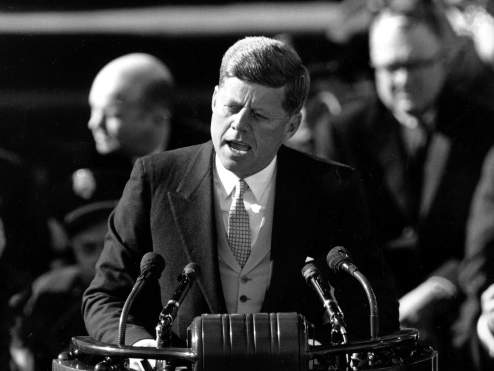

All documents mention The United States in some way. They also commonly talk from a perspective of the people with phrases like "Our fellow citizens". Individually, The early United States speeches with people, like John Adams, talk about the people ALOT. Next, during wartime Franklin D. Roosevelt was said 8 whole times, probably all from Truman. Finally, in current day, "God bless you" was said way more than previous inaugural texts. I find this interesting because the presence of christianity should have been way more popular back in the day.

John F. Kennedy giving inaugural speech (1961).